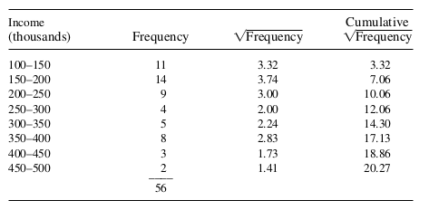

MATH 313: Survey Design and Sampling
Understanding the complexities and challenges of stratified random sampling is crucial for enhancing survey accuracy and efficiency. By addressing common issues such as budget constraints and optimal strata selection:
Use the proportional allocation formula to determine sample sizes: \[n_i = \frac{C}{\sum_{i=1}^k c_i w_i} w_i\] Where:
Goal: Minimize variance of the estimator. Strata should be homogeneous internally and heterogeneous externally.
Useful for delineating strata based on available frequency data. Summarize and stratify based on the cumulative square root of category frequencies. Generally, limit to five or six strata to avoid over-complication.
Stratify a population by income to estimate average household income:
This method is theoretical as it requires prior knowledge of incomes.
Example 1: In the television viewing example \(\left(N_1=155, N_2=62\right.\), and \(\left.N_3=93\right)\), the cost of obtaining an observation is \(c_1=c_2=\$ 9, c_3=\$ 16\). Let the stratum standard deviations be approximated by \(\sigma_1 \approx 5, \sigma_2 \approx 15, \sigma_3 \approx 10\). Given that the advertising firm has only \(\$ 500\) to spend on sampling, choose the sample size and the allocation that minimize \(V\left(\bar{y}_{s t}\right)\).
Example 2: In the television viewing example \(\left(N_1=155, N_2=62\right.\), and \(\left.N_3=93\right)\), the cost of obtaining an observation is \(c_1=c_2=\$ 9, c_3=\$ 16\). Let the stratum standard deviations-be approximated by \(p_1 \approx 0.80, p_2 \approx 0.25, p_3 \approx 0.50\) using some similar survey performed two years ago. Given that the advertising firm has only \(\$ 500\) to spend on sampling, choose the sample size and the allocation that \(minimize V\left(\hat{p}_{s t}\right)\).
Example 3: An investigator wishes to estimate the average yearly sales for 56 firms, using a sample of \(n=15\) firms. Frequency data on these firms is available in the form of classification by \(\$ 50,000\) increments and appears in the accompanying table. How can we best allocate the firms to \(L=3\) strata?